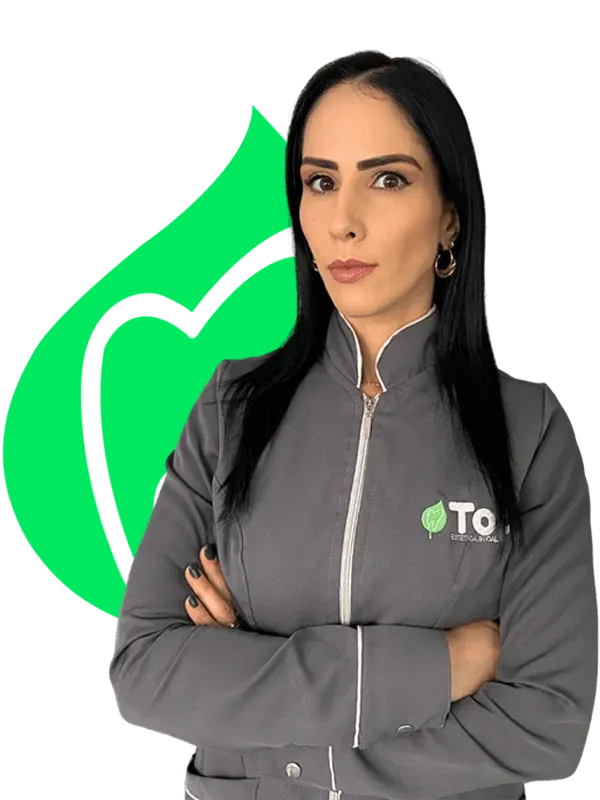
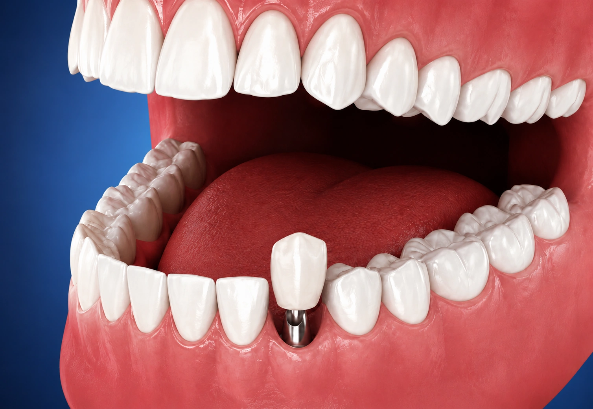

{{ icons.leaf }}
Avaliação de cortesia
Uma primeira conversa para entender a perda dentária, suas expectativas e os próximos passos do planejamento.
Implantes dentários planejados para recuperar dentes perdidos, devolver confiança ao sorriso e trazer mais conforto para sua rotina.
{{ icons.whatsapp }} Agendar avaliação para implanteFale diretamente com a equipe e entenda os próximos passos.
A Top Estética Bucal é uma rede de clínicas odontológicas comprometida em oferecer tratamentos de alta qualidade, unindo tecnologia, atendimento humanizado e profissionais especializados.
Na unidade de Flores da Cunha, cada paciente é recebido com atenção, transparência e um planejamento individual. A clínica atua na prevenção, reabilitação e estética do sorriso, reunindo diferentes especialidades em um só lugar.
Nosso objetivo é tornar o cuidado odontológico mais tranquilo, próximo e acessível, contribuindo para a saúde, a autoestima e a qualidade de vida de cada paciente.


IMPLANTES DENTÁRIOS
Os implantes dentários são indicados para substituir dentes perdidos e devolver mais estabilidade ao sorriso. Eles podem contribuir para a mastigação, a estética facial, a fala e a confiança na rotina.
Na Top Estética Bucal de Flores da Cunha, o tratamento começa com avaliação individual. A equipe analisa sua saúde bucal, entende suas necessidades e orienta sobre exames, etapas, cuidados e possibilidades para o seu caso.
A indicação, os exames e as etapas do implante são definidos individualmente após avaliação profissional.
Da avaliação inicial ao acompanhamento, tudo é pensado para que você entenda o tratamento e tome decisões com segurança.
Uma primeira conversa para entender a perda dentária, suas expectativas e os próximos passos do planejamento.
Avaliação individual para definir indicação, exames, etapas e possibilidades de reabilitação.
Você recebe orientação sobre etapas, cuidados, prazos e investimento conforme a indicação do seu caso.
Cuidado voltado para recuperar função mastigatória, estética e confiança no dia a dia.
Uma equipe acessível para ouvir suas dúvidas e explicar o processo com calma.
A indicação do implante e das próteses é feita de acordo com a necessidade de cada paciente.
Atendimento em horários ampliados, inclusive até 19h30 e aos sábados. Confirme a disponibilidade pelo WhatsApp.
Unidade bem localizada no Centro de Flores da Cunha.
DEPOIMENTOS
Avaliações reais de pacientes da unidade Flores da Cunha.
{{ review.text }}
Fale com a equipe da Top Estética Bucal de Flores da Cunha, conte sobre sua necessidade e agende uma avaliação para implante dentário.
{{ icons.whatsapp }}Agendar avaliação para implanteResposta rápida durante o horário de atendimento.
Um espaço preparado para orientar seu planejamento de implante com conforto, segurança e tranquilidade.
Top Estética Bucal — Unidade Flores da Cunha
R. Profa. Maria dal Conte, 2235
Centro — Flores da Cunha, RS
Horários diferenciados, com atendimento até 19h30 e aos sábados. Consulte a disponibilidade para avaliação de implante pelo WhatsApp.
{{ f.a }}